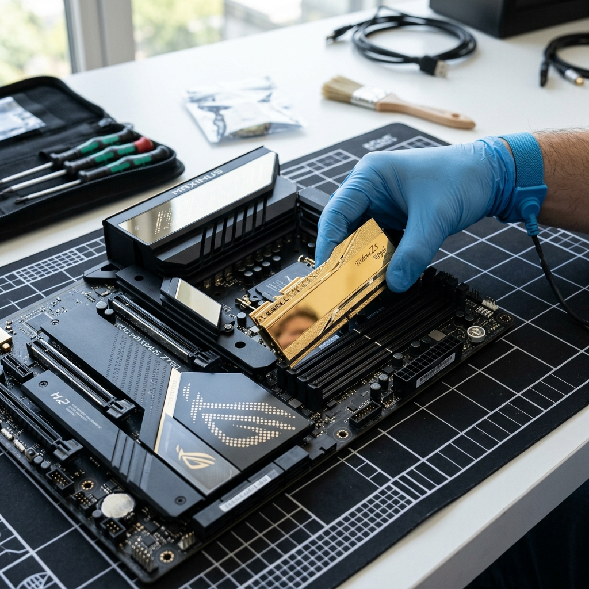
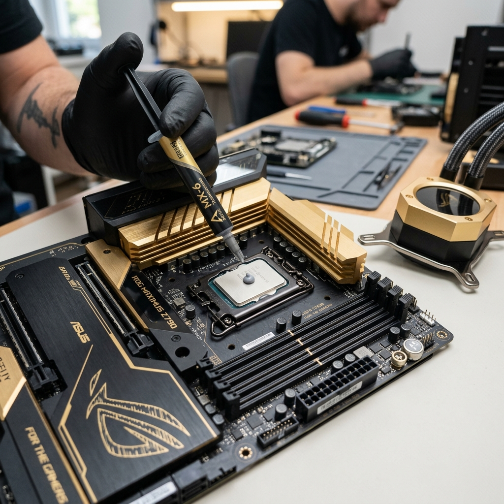

Seja para gerenciar planilhas pesadas no escritório ou para encarar sessões de jogos competitivos em alta resolução, o computador se tornou o motor central da nossa rotina. No entanto, é muito comum que, com o passar dos meses, aquela máquina rápida e silenciosa comece a apresentar lentidões inexplicáveis, travamentos ao abrir programas simples ou ruídos elevados nas ventoinhas.
Muitos usuários acreditam que a solução é descartar o equipamento e adquirir um computador novo. Porém, na enorme maioria dos casos, técnicas especializadas de **upgrade estratégico** combinadas com uma rotina de **manutenção preventiva** conseguem resgatar a performance máxima do hardware por uma fração do preço.
🚀 Upgrade Inteligente: Sobrevida e Alta Performance
A evolução tecnológica dos softwares exige cada vez mais poder de processamento e acesso rápido a arquivos. Se a sua máquina leva minutos para ligar ou trava na alternância entre abas do navegador, dois componentes são os principais suspeitos:
- Substituição por SSD NVMe (M.2): A troca de um disco rígido convencional (HD mecânico) por um SSD moderno de alta velocidade é o upgrade mais impactante. Ele aumenta em até 10x a velocidade de carregamento do sistema operacional e de programas pesados.
- Expansão de Memória RAM: O acúmulo de tarefas simultâneas exige espaço de memória volátil rápida. Passar de 8GB para 16GB ou 32GB de RAM garante fluidez absoluta em multitarefas e jogos modernos.

🎮 Máquinas Gamer: A Importância do Fluxo de Ar e Refrigeração
Computadores gamer utilizam chips gráficos (GPUs) e processadores (CPUs) que trabalham sob alta tensão energética, gerando calor intenso. Sem uma dissipação térmica eficiente, o hardware ativa o *thermal throttling* (mecanismo de proteção que reduz deliberadamente a velocidade dos componentes para evitar que derretam). Isso resulta em quedas bruscas de quadros por segundo (FPS) no meio das partidas.
Para computadores de alta performance, a montagem exige atenção minuciosa na organização dos cabos (cable management) e no posicionamento correto dos fans (ventoinhas) e Water Coolers. Um gabinete limpo e com fluxo de ar otimizado prolonga a vida útil dos chips de vídeo em vários anos.
🧼 Manutenção Preventiva: Por Que Não Esperar o Travamento?
A poeira doméstica é a pior inimiga dos circuitos eletrônicos. Ela se acumula nos dissipadores de alumínio, bloqueando a saída de ar quente e agindo como um cobertor térmico que sufoca as peças. A manutenção preventiva regular deve ser feita a cada 6 ou 12 meses e envolve:
- Limpeza Química Descontaminante: Remoção completa de poeira e oxidações com álcool isopropílico.
- Renovação da Pasta Térmica: A pasta entre o processador e o cooler resseca com o tempo, perdendo a capacidade de transferir calor. Aplicar uma pasta de alta condutividade térmica reduz a temperatura de operação em até 15°C imediatamente.

"Prevenir o superaquecimento do seu processador custa menos de 10% do valor de um chip novo. Manter a manutenção preventiva em dia é investimento inteligente de segurança."
Comentários
Nenhum comentário enviado ainda. Seja o primeiro a opinar!
Deixe sua Opinião